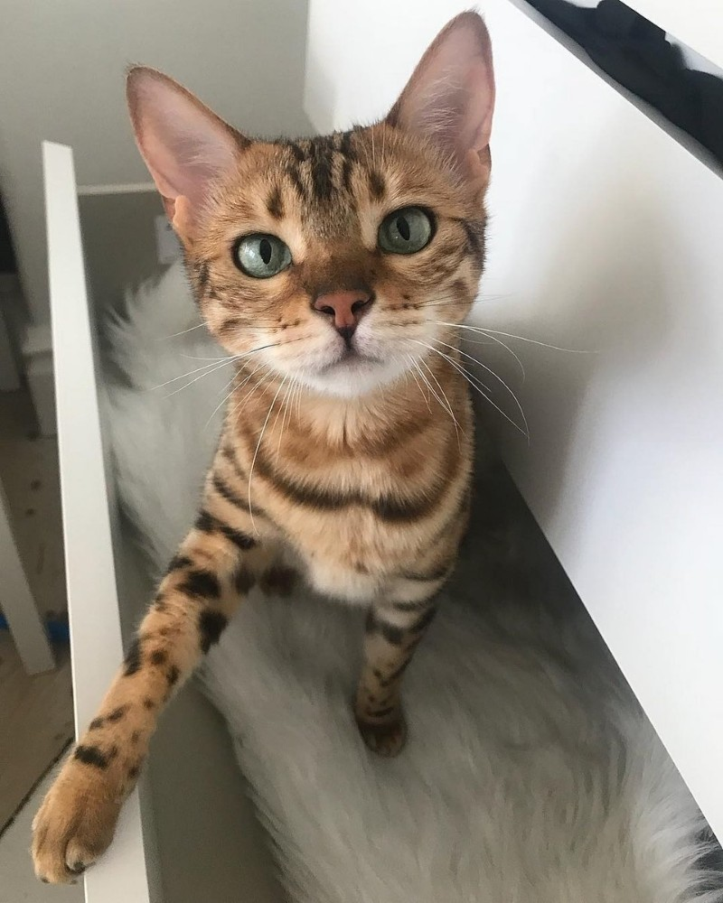
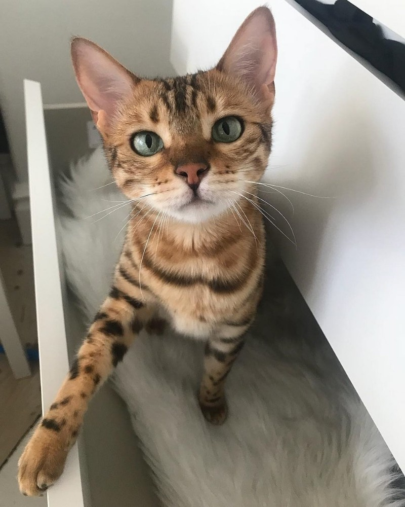
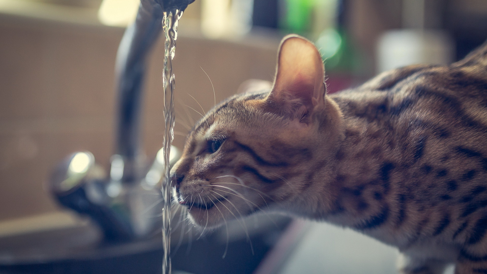

Бенгальская кошка
 

Содержание:
- Краткая информация
- Описание породы
- Порода
- Характер
- Здоровье
- Факты
Краткая информация:
Описание породы
- Шерсть - короткая, густая, блестящая, шелковистая.
- Голова - массивный череп, чуть больше в длину, чем в ширину, с округлыми контурами и мощной, широкой мордой. Профиль с лёгким переходом. Шея длинная, мощная.
- Глаза - большие, овальные. Поставлены широко, под небольшим углом. Допустим любой цвет, кроме голубого и аквамаринового, для снежного бенгала (сил-линкса) — только чистый интенсивный голубой
- Тело - от среднего размера до крупного, мускулистое, растянутое, крепкое. Конечности средней длины, сильные и мускулистые. Лапы большие, круглые. Хвост средней длины, толстый, с округлым кончиком.
- Лапы - средней длины, задние немного длиннее передних
- Хвост - Описание. Бенгальская кошка похожа на маленького леопарда. Стандартами американской ассоциации ACFA четко прописано, что целью разведения бенгальских кошек является получение домашней кошки с нежным характером, но так, чтобы по своим физическим параметрам она не отставала от представителей семейства кошачьих, проживающих в природной среде обитания – в диком лесу.
- Плюсы:Как бы странно это ни звучало, но кошки на самом деле очень чувствительные существа. Они предельно тонко реагируют на смену настроения, эмоционального состояния хозяина. Они могут чувствовать приближение болезни, какого-то несчастья. Много случаев когда кошки чувствовали приближение стихийного бедствия: землетрясения, урагана, наводнения, пожара. Своим поведением предупреждали домочадцев заранее: назойливо мяукая, путаясь под ногами. Они могут и от болезни вылечить, забрать на себя негатив, придав дому благодатную атмосферу. Можно заметить, что после общения со своим питомцем улучшается настроение, происходит прилив сил, возникает положительный настрой. А их сладкое мурлыканье – лучший релаксатор.
- Минусы:Минусы: — Упрямый характер: Бенгалы могут быть очень напористыми, когда чего-то хотят. Это может быть, например, громкое мяуканье или дерзкие попытки добиться желаемого. Открывайте двери, обыскивайте шкафы, открывайте упаковки, рыться в свежем белье и тому подобное. — Внимание: бенгалам нужно много внимания, если они его не понимают, рекомендуется в качестве партнера по игре другая кошка.
История породы
- Происхождение - США. Бенгальск ая кошка-одомашненная порода кошек, созд анная из гибридов дом ашних кошек, о собенно пятнистого египетского мау, с азиатской леопардовой кошкой (Prionailurus bengalensis). Название породы происходит от таксономического названия леопардовой кошки. Бенгалы имеют дикий вид; их золотое мерцание происходит от их предков леопардовых кошек, а на их шерсти могут быть пятна, розетки, отметины от наконечников стрел или мрамор.
- Популярность - Бенгальская пород а была более полно развита к 198 0-м годам. "В 1992 году Межд ународная ассоциация кошек насчитывала 125 зарегистрированных бенгальских заводчиков". К 2000-м годам бенгалы стали очень популярной породой. В 2019 году во всем мире насчитывалось около 2000 бенгальских заводчиков.
Характер кошки
Характер бенгальских кошек объединяет темпераменты дикого зверя и домашнего животного. У бенгалов хорошо развит охотничий инстинкт. В любом возрасте они признают игры «на охоту» — гонки за мячами и игрушками, ловлю махалок, погони и преследования. Хорошо живут в стае. Быстро дичают при вольерном содержании. При воспитании котят очень важно приучать их к рукам, иначе они могут вырасти диковатыми. Вопреки слухам, бенгалы не кровожадны и не агрессивны. Никакой опасности для детей и домашних животных (кроме грызунов и птиц) не представляют. С лёгкостью обучаются ловле мышей, но редко едят их.
Здоровье кошки
Здоровье бенгальских кошек. Бен галы живут 13 – 15 лет, отдельные особи – до 21 года. Они славятся крепким здоровьем, которое определяют гены выносливых диких предков, но случаются проблемы: Расстройство пищеварения, болезни органов ЖКТ. Бенгальским кошкам достался слабый желудок, он мгновенно реагирует на несвежую еду, смену корма. Воспаления органов желудочно-кишечного тракта у живот ных случаются чаще, чем у остальных пород.


Интересные факты о бенгальских кошках
- Дружба кошки и собаки! Звучит невероятно, верно? Это, несомненно, самый интересный и удивительный факт, который вы должны знать о бенгальских кошках. Эти замечательные кошки дружат не только с собаками – но и с другими домашними питомцами (конечно, кроме мелких грызунов и мелких птиц)
- Вода. Обычно для котов вода становится страшным врагом. Однако бенгальские кошки обожают купаться и не видят в этом ничего опасного.
- Бенгальские кошки любят прятать вещи хозяев с этой породой лучше всегда быть начеку – эти кошки любят играть с мелкими предметами и прятать их от хозяев. Особенно их привлекает все блестящее и сверкающее, поэтому не стоит оставлять в свободном доступе ювелирные украшения, иначе вы рискуете расстаться с ними навсегда.
- Маленькие комнаты. Бенгальцы некомфортно себя чувствуют в маленьких помещениях. Из-за генов их предков пушистым любимцам свойственно постоянно находится в движении: бегать, прыгать и лазать. Желательно чтобы в помещении, в котором живет кот, был выход на свежий воздух.
- Они считаются одними из самых болтливых кошек, поэтому не рассчитывайте на тишину в доме. Если бенгалу что-то потребуется, он обязательно об этом сообщит голосом – причем палитра звуков у кошек этой породы очень разнообразна.
- Бенгалы — воришки еще одной удивительной чертой бенгалов является то, что они любят прятать вещи, чтобы завоевать ваш интерес. Это может быть что угодно, начиная от блестящих украшений и ключей, заканчивая бумажными деньгам и ручками. Вы можете найти важные документы разорванными на тысячу кусочков.Самые любимые вещи для кражи – заколки и резинки для волос, ручки и карандаши, мелкие детские игрушки. Так что знайте, кто виноват, если вы заметите пропажу вещей, когда у вас Бенгал дома.
- Альпинизм-бенгалы имеют экстраординарные способности – они могут подняться даже там, где вы никогда бы не подумали. Они любят прыгать и лазить, как их дикие предки.Также, бенгалы обожают деревья и высокие полки и шкафы.
- Бенгалам часто нужны новые игрушки эта особенность является не менее важной, чем другие, ведь это будет стоить вам немало денег. Вам нужны будут интерактивные и интеллектуальные игрушки, мячики, мышки, махалки. Кошкам быстро надоедают игрушки, поэтому вам придется их часто докупать и менять. 